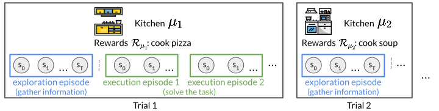
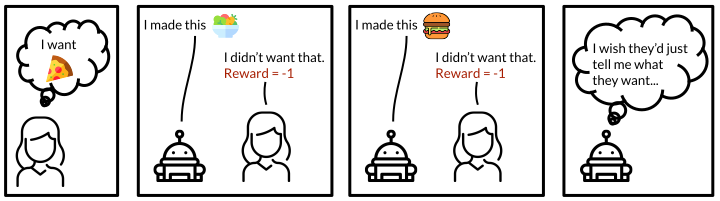
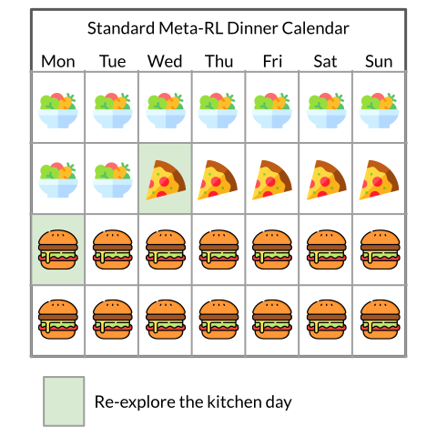
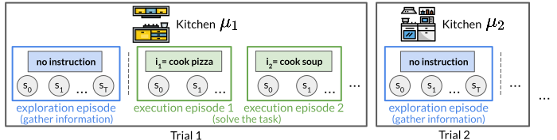
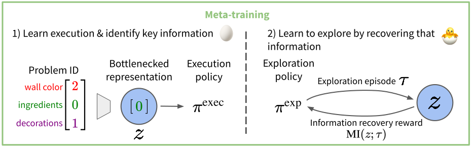
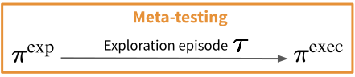

via Factorized Meta-Reinforcement Learning
Abstract. We seek to efficiently learn by leveraging shared structure between different tasks and environments. For example, cooking is similar in different kitchens, even though the ingredients may change location. In principle, meta-reinforcement learning approaches can exploit this shared structure, but in practice, they fail to adapt to new environments when adaptation requires targeted exploration (e.g., exploring the cabinets to find ingredients in a new kitchen). We show that existing approaches fail due to a chicken-and-egg problem: learning what to explore requires knowing what information is critical for solving the task, but learning to solve the task requires already gathering this information via exploration. For example, exploring to find the ingredients only helps a robot prepare a meal if it already knows how to cook, but the robot can only learn to cook if it already knows where the ingredients are. To address this, we propose a new exploration objective (DREAM), based on identifying key information in the environment, independent of how this information will exactly be used solve the task. By decoupling exploration from task execution, DREAM explores and consequently adapts to new environments requiring no reward signal when the task is specified via an instruction. Empirically, DREAM scales to more complex problems, such as sparse-reward 3D visual navigation, while existing approaches fail from insufficient exploration.
Goal and Preliminaries
Goal. Our goal is to learn agents (e.g., a robot chef) that can quickly adapt to new, but similar tasks and environments (e.g., cooking in a new kitchen after learning to cook in several training kitchens). By leveraging shared structure between different tasks and environments, this can be much more sample efficient than learning a separate agent from scratch for each task and environment.
{kind=link}
Standard meta-RL setting.
Meta-reinforcement learning preliminaries. Broadly, this goal is captured by the standard meta-reinforcement learning (meta-RL) problem setting (pictured above), where during meta-training, the agent trains on many tasks and environments, and then must accomplish a new task in a new environment during meta-testing. When presented with a new task and environment, the agent is allowed to first spend an episode exploring, gathering any necessary information (e.g., locating the ingredients), before execution episodes, where the agent must accomplish the task (e.g., cook a meal).
More formally, standard meta-RL considers a family of problems, where each problem \(\mu\) identifies a reward function \(\mathcal{R}_\mu\) (e.g., cook a pizza) and transition dynamics (e.g., a kitchen). Using the terminology from Duan et al., 2016, we define a trial to consist of several episodes in the same problem. The first episode is the exploration episode, where the agent is allowed to gather information, without needing to maximize returns, and all subsequent episodes are execution episodes, where the agent must accomplish the task. The goal is to maximize the returns achieved during the execution episodes of meta-testing trials, after first training on many trials during meta-training.
Instruction-based Meta-Reinforcement Learning (IMRL)
Improvements on the standard meta-RL setting. While this standard meta-RL setting is a general and useful problem formulation, we observe two areas which can be made more realistic. First, the standard setting requires the agent to infer the task (e.g., the meal to cook) from reward observations, which can be needlessly inefficient. In a more realistic situation, the user could instead just tell the agent what they want.
{kind=link}
Open and honest communication is important for your robots too.
Second, while the standard meta-RL setting leverages shared structure between different problems (environment and task pairs), it does not capture shared structure between different tasks in the same environment. More concretely, the task is fixed across all episodes in a trial, and in order to perform a new task (e.g., cook a new meal), the agent requires another exploration episode, even when the underlying environment (e.g., the kitchen) stays the same. Instead, an agent would ideally be able to perform many tasks after a single exploration episode. For example, after exploring the kitchen to find any ingredients, an ideal robot chef would be able to then cook any meal involving those ingredients.
{kind=link}
Dinner schedule according to a robot chef trained in the standard meta-RL setting.
These two areas can obscure the meta-exploration problem of how to optimally spend the exploration episode, as the former requires unnecessary exploration to infer the task, while the latter only requires the agent to explore to discover information relevant to a single task. While intuitively, the agent should spend the exploration episode gathering useful information for later execution episodes, in many cases, optimal exploration collapses to simply solving the task. For example, the agent can only discover that the task is to cook pizza by successfully cooking pizza and receiving positive rewards. Then, on future execution episodes, it just repeats its behavior from the exploration episode.
Instruction-based meta-RL (IMRL). To make the meta-RL setting more realistic, we propose a new setting called instruction-based meta-RL (IMRL), which addresses the two above areas by providing the agent with instructions (e.g., "cook pizza" or a one-hot representation) that specify the task during execution episodes and varying the task on different execution episodes by providing different instructions. Then, for example, after meta-training in different kitchens at a factory, a robot chef could begin cooking many different meals specified by a human in a new home kitchen, after a single setup period (exploration episode).
{kind=link}
Instruction-based meta-RL. The task, which changes each execution episode, is conveyed to the agent via instructions. The environment still stays the same within a trial.
Reward-free adaptation. In the standard meta-RL setting, the agent requires reward observations during exploration episodes in order to infer the task. However, by receiving instructions that specify the task in IMRL, the agent no longer requires observing rewards to adapt to new tasks and environments. Concretely, IMRL enables reward-free adaptation, where during meta-training, the agent uses reward observations during execution episodes to learn to solve the task, but does not observe rewards during exploration episodes. During meta-testing, the agent never observes any rewards. This enables modeling real-world deployment situations where gathering reward supervision is be expensive. For example, ideally, a robot chef would be able to adapt to a home kitchen without any supervision from a human.
Importantly, setting the instruction to always be some "empty" instruction recovers the standard meta-RL setting. In other words, standard meta-RL is just IMRL, where the user's desires are fixed within a trial and the user says nothing for the instructions. Therefore, algorithms developed for IMRL can also be directly applied to the standard setting.
Decoupled Reward-free Exploration and Execution in Meta-Reinforcement Learning (DREAM)
A chicken-and-egg coupling problem. A common approach (Wang et al., 2016, Duan et al., 2016) for learning useful exploration behaviors is to optimize a recurrent policy that performs both exploration and execution episodes end-to-end based on the execution episode rewards. The hope is to capture the information learned during the exploration episode in the recurrent policy's hidden state, which will then be useful for execution episodes. However, we identify a chicken-and-egg coupling problem, where learning good exploration behaviors requires already having learned good execution behaviors and vice-versa, that prevents such an approach from learning. For example, if a robot chef fails to discover the locations of ingredients in a kitchen (bad exploration), then cannot possibly learn how to cook (bad execution). On the other hand, if the robot does not know how to cook (bad execution), then no matter what it does during the exploration episode, it will still not successfully cook a meal, making learning exploration challenging. Since robots aren't created with the ability to cook or explore, they get stuck in this local optimum and have a hard time learning either.
{kind=link}
{kind=link}
The coupling problem. What came first: the chicken (good exploration) or the egg (good execution)?
Avoiding the coupling problem with DREAM. To avoid the chicken-and-egg coupling problem, we propose to break the cyclic depence between learning exploration and learning execution behaviors, which we call DREAM. Intuitively, we observe that good exploration can be learned by trying to recover the information necessary for executing instructions. Therefore, from a high-level, DREAM consists of two main steps: 1) simultaneously learn an execution policy independently from exploration and learn what information is necessary for execution and 2) learn an exploration policy to recover that information.
{kind=link}
To answer the chicken-and-egg problem, DREAM manufactures its own egg, and out comes the chicken.
More concretely, in the first step, we train an execution policy \(\pi^\text{exec}\) conditioned on the problem identifier \(\mu\), which in the cooking example, may either directly identify attributes of the kitchen (e.g., wall color or ingredient locations), or simply be a unique identifier (e.g., a one-hot) for each kitchen. This problem identifier (directly or indirectly) encodes all the information necessary to solve tasks in the kitchen, allowing the execution policy to learn independently from exploration, which avoids the coupling problem. At the same time, our goal in the first step is to identify only the information necessary for executing instructions, and the problem identifier may also encode extraneous information, such as the wall color. To remove this, we apply an information bottleneck to obtain a bottlenecked representation \(z\), which we use for training an exploration policy \(\pi^\text{exp}\).
In the second step, once we've obtained a bottleneck representation \(z\) that ideally contains only the information necessary for executing instructions, we can train an exploration policy \(\pi^\text{exp}\) to recover this information in the exploration episode. To do this, we roll-out the exploration policy to obtain an episode \(\tau\) and then reward the policy based on how well this episode encodes the information contained in \(z\). Roughly, this reward is the mutual information \(\mathcal{I}(z; \tau)\) between the bottlenecked representation \(z\) and the episode \(\tau\).
{kind=link}
DREAM meta-testing.
Typically, the problem identifier \(\mu\) is not available during meta-testing, e.g., the attributes of a home kitchen may be unknown. This might seem concerning, since, during meta-training, the execution policy conditions on \(z\), which requires knowing \(\mu\). However, since the exploration policy is trained to produce exploration trajectories \(\tau\) that contain the same information as \(z\), we can swap \(\tau\) for \(z\) at meta-test time. See our paper for the details!
Results
{kind=link}
Sign reads blue.

Sign reads red.
Sparse-reward 3D visual navigation. In one experiment from our paper, we evaluate DREAM on the sparse-reward 3D visual navigation problem family proposed by Kamienny et al., 2020 (pictured above), which we've made harder by including a visual sign and more objects. During execution episodes, the agent receives an instruction to go to an object: a ball, block or key. The agent starts episodes on the far side of the barrier, and must walk around the barrier to read the sign (highlighted in yellow), which in the two versions of the problem, either specify going to the blue or red version of the object. The agent receives 80x60 RGB images as observations and can turn left or right, or move forward. Going to the correct object gives reward +1 and going to the wrong object gives reward -1.
DREAM learns near-optimal exploration and execution behaviors on this task, which are pictured below. On the left, DREAM spends the exploration episode walking around the barrier to read the sign, which says blue. On the right, during an execution episode, DREAM receives an instruction to go the key. Since DREAM already read that the sign said blue during the exploration episode, it goes to the blue key.
Behaviors learned by DREAM

Exploration.

Execution: go to the key.
Comparisons. Broadly, prior meta-RL approaches fall into two main groups: (i) end-to-end approaches, where exploration and execution are optimized end-to-end based on execution rewards, and (ii) decoupled approaches, where exploration and execution are optimized with separate objectives. We compare DREAM with state-of-the-art approaches from both categories. In the end-to-end category, we compare with:
- RL2 (Duan et al., 2016, Wang et al., 2016), the canonical end-to-end approach, which learns a recurrent policy conditioned on the entire sequence of past state and reward observations.
- VariBAD (Zintgraf et al., 2019), which additionally adds auxiliary loss functions to the hidden state of the recurrent policy to predict the rewards and dynamics of the current problem. This can be viewed as learning the belief state (Kaelbling et al., 1998), a sufficient summary of all of its past observations.
- IMPORT (Kamienny et al., 2020), which additionally leverages the problem identifier to help learn execution behaviors.
- PEARL-UB, an upperbound on PEARL (Rakelly et al., 2016). We analytically compute the expected rewards achieved by the optimal problem-specific policy that explores with Thompson sampling (Thompson, 1933) using the true posterior distribution over problems.
Quantitative results. Below, we plot the returns achieved by all approaches. In contrast to DREAM, which achieves near-optimal returns, we find that the end-to-end approaches never read the sign, and consequently avoid all objects, in fear of receiving negative reward for going to the wrong object, even when they are allowed to observe rewards in the exploration episode (dotted lines). Therefore, they achieve no rewards, which is indicative of the coupling problem.
On the other hand, while existing approaches in the decoupled category avoid the coupling problem, optimizing their objectives does not lead to the optimal exploration policy. For example, Thompson sampling approaches (PEARL-UB) do not achieve optimal reward, even with the optimal problem-specific execution policy and access to the true posterior distribution over problems. Recall that Thompson sampling explores by sampling a problem from the posterior distribution and following the execution policy for that problem. Since the optimal execution policy directly goes to the correct object, and never reads the sign, Thompson sampling never reads the sign during exploration.

Training curves with (dotted lines) and without (solid lines) rewards during exploration. Only DREAM reads the sign and solves the task.
Additional results. In our paper, we also evaluate DREAM on additional didactic problems, designed to to answer the following questions:
- Can DREAM efficiently explore to discover only the information required to execute instructions?
- Can DREAM generalize to unseen instructions and environments?
- Does DREAM also show improved results in the standard meta-RL setting, as well as instruction-based meta-RL?
Source Code
Check out the code for DREAM, IMRL, and the problem families we evaluate on at GitHub!
Paper and BibTeX
|
Acknowledgements
This website is adapted from this website, which was in turn adapted from this website. Feel free to use this website as a template for your own projects by referencing this!
Icons used in some of the above figures were made by Freepik, ThoseIcons, dDara, ThoseIcons, mynamepong, Icongeek26, and Vitaly Gorbachev from flaticon.com.